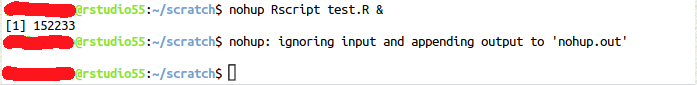

Running long jobs on your Research Cloud workspace
When is this relevant?
Often it is advisable to run long jobs (e.g. long scripts or analyses that take hours or days to complete) as background processes. By running long jobs as background process, you make sure the jobs will not be interrupted when you (by accident) close the window with which you access your workspace or when your internet connection is interrupted. This can happen in the following cases:
- When you access your workspace via your web browser (Jupyter Notebooks, RStudio, Ubuntu Desktop, etc.)
- When you access your workspace via SSH
When you access your workspace via RDP (Remote Desktop), jobs will normally not be interupted by disconnecting. More info on access methods
Saving credits and resources when running long jobs
A problem you may run into when running long jobs on your workspace is that the workspace will keep running even after the job is complete. Because you might not know exactly how long your job will take, you may be unable to pause the workspace manually immediately after the job is finished. This can potentially cost a lot of credits, and waste resources on the platform. UU-maintained Catalog Items come with a custom run_and_pause script that will pause your workspace when your long-running process is finished. Read more about it below.
How to run jobs as background processes
Prerequisites
- You will need some basic linux command line skills to be able to run scripts as background processes. If you don’t have these skills, take some time to practice using sections 1, 2, 3 and 7 of this short online course before proceeding. You can practice in the terminal (see step 1).
- Your script should be ‘standalone’; which means that you should be able to run your entire script in one go without providing additional input. For scripts, all figures and output data should be stored in files (e.g.
.pngimages and/or.csvtables), for Jupyter notebooks this might be not necessary if the figures should be embedded in the notebook.
Step 1: Make sure you are in a terminal
- In Jupyterhub (Jupyter Workspace in Research cloud): To open a new terminal, click the + button in the file browser and select the terminal in the new Launcher tab (find a short video here).
- In Rstudio (Rstudio workspace in Research cloud): In the bottom left panel, click the ‘terminal’ tab.
- In an Ubuntu Desktop workspace, click ‘Applications’ in the top left corner and then ‘Terminal’
Step 3: Run your script as background process
We outline two ways of running your long job as a background process:
- Using the UU-provided
run_and_pausescript.- the main advantage of this method is that it will automatically pause your workspace when the job is finished, thereby saving credits and resources.
- the downsides are that the script is only available on UU-maintained Catalog Items, and that it requires a ResearchCloud API token.
- Using the generic method
nohup.
Method 1: using run_and_pause
Additional prerequisites:
- a personal ResearchCloud API token. See here for how to acquire one.
- NOTE: an API token is sensitive information. Treat it safely, just as you would treat a password!
- a workspace that contains the
run_and_pausescript. You can check whether it is installed by just typingrun_and_pausein your terminal. All UU-maintained catalog items should have the script installed.
To run your long job and automatically pause the workspace when it is finished, simply perform the following steps:
- Run
run_and_pause "mycommand myarg1 myarg2"in your terminal.- optionally, you can add the
-sflag to runrun_and_pausein silent mode.
- optionally, you can add the
- The script will prompt you for your ResearchCloud API token. Enter it.
- The script will create a log file to which all output of your script will be logged, and tell you where to find it.
- Press any key to start running your command. The
run_and_pausescript will now exit, but your command wil keep running in the background. - When the job is finished, the workspace will be automatically paused!
Inspecting output
After the run_and_pause script exits (step 4), you can check your script’s output by inspecting the logfile. Logfiles will always be written to your home directory, and the script will tell you the exact location. For instance, run_and_pause might tell you the following:
The command's output will be saved to /home/youruser/run_and_pause.abcd123.log`You can then use any text editor to inspect this logfile. To track live output while your command is running, you could use the following command: tail -f /home/youruser/run_and_pause.abcd123.log
Note: the logfile will only contain output that is written to the default ‘standard output’ and ‘standard error’. If your script instead writes output to certain set locations, of course your results will be saved there!
Running run_and_pause in silent mode
By default, run_and_pause will write some helpful messages to the logfile. For instance, after completion, the file /home/youruser/run_and_pause.abcd123.log might look as follows:
Will run the following command, and pause the workspace when it exits:
echo "HELLO WORLD"
All output from the command will be captured below.
To interrupt this process, run:
kill 2605 && pkill -P 2605
Command output starts below.
------
HELLO WORLD
------
Command exited with exit code: 0
Now pausing the workspace...If you want the logfile to only contain your command’s output, you can run run_and_pause in silent mode by adding the -s flag. So for instance: run_and_pause -s mycommand myarg1 myarg2. The info messages from run_and_pause will now be omitted from the log.
Method 2: using nohup
More info about the use of nohup can be found here. For this usecase we combine nohup with an ampersand “&” to run a background process the will continue even is the terminal window is closed. The process will only stop:
- If it has finished
- If an error occurs
- If the workspaces is paused or deleted
If your script normally prints output to the terminal or console, this will now be written into a file nohup.out which will be created automatically when you run the script in the folder from where you run the script.
For R scripts:
nohup Rscript your-rscript.R &For Jupyter notebooks:
nohup jupyter nbconvert --execute --to notebook --inplace your-notebook.ipynb &After submitting this command you will see the following:

You need to press Enter one more time to return to the command prompt. The number between square brackets is the job ID and the second number is the process ID.
Terminating the process
Terminating a command run via nohup
Use the process ID to terminate the job, e.g.:
kill 152233If you don’t know the process ID you can look it up by using a monitoring tool like top (more info).
Terminating a command run with run_and_pause
When you are using run_and_pause (see above), you need to terminate two processes:
- The process used by
run_and_pauseto pause the workspace afteryourcommandexits - The process that is actually running
yourcommand
If you only terminate the second process, the workspace will still be paused!
Fortunately, run_and_pause tells you exactly how to terminate both processes. It will tell you, for instance:
Now running your command, and will pause the workspace afterwards!
To stop this process, and stop the workspace from pausing, run:
kill 1234 && pkill -P 1234So to interrupt your command and stop the workspace from being paused, just run kill 1234 && pkill -P 1234.
Explanation: in the above example, 1234 is the so-called ‘process number’ of the command used to pause the workspace. kill 1234 interrupts that process (ensuring the workspace is not paused), while pkill -P 1234 interrupts all direct sub-processes of that command, ensuring that yourcommand is also stopped.
Note: if yourcommand also spawns sub-processes, you may need to kill them by hand. Of course, you could also pause and resume the workspace to achieve the same result!
How do I know my job has ended?
There are several ways to find out if your job has ended:
When things go as planned, you can check if the expected output data has been generated. You can also use the jobs command to check the status of your background job. If the job is running, the output will look like this:
[1]+ Running nohup Rscript test.R &If the job has ended, there will be no output.
Monitoring progress
By adding print statements to your script, you allow monitoring of the progress of your script (it might be that some of the functions that you use already print output to the console/terminal by default). All output that you create with print statements will be written to the nohup.out file (see step 3). Use for example a print statement in a for loop to print the iteration number. Follow these links for more info: